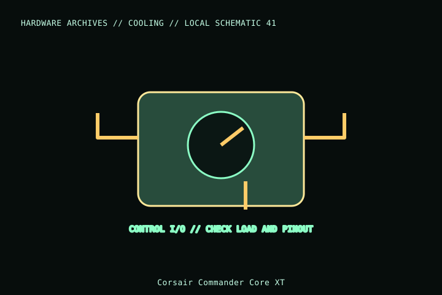

[ INDIVIDUAL COMPONENT // COOLING ]
Corsair Commander Core XT
Corsair’s Commander Core XT combines six PWM fan channels with Corsair RGB control and temperature-sensor inputs. Its proprietary RGB ports are not standard 5 V ARGB or 12 V RGB headers.

MODEL IDENTIFICATION: Verify full model, suffix, SKU, generation, connector, and host-support documentation against the physical item. The record describes only the identified model and does not guarantee host compatibility.
Specifications
| Exact identity | iCUE Commander Core XT; part CC-9011210-WW |
|---|---|
| Fan control | Six 4-pin PWM fan ports; verify individual and aggregate fan limits in the current Corsair guide. |
| Lighting | Corsair proprietary RGB fan ports; not electrically/pinout compatible with standard motherboard RGB/ARGB plugs. |
| Power / data | SATA power and internal USB connection for iCUE; both must be connected as directed. |
| Sensors / host | Temperature-sensor inputs and controller mounting depend on exact bundled contents and case/USB header availability. |
Compatibility and installation
- Check CC-9011210-WW and manual for port assignments, fan current limits, sensor count, SATA power and USB wiring.
- Do not attach generic ARGB/RGB devices to Corsair proprietary RGB ports without a manufacturer-approved adapter/controller.
- Secure the controller, route cables clear of fan blades, and verify iCUE detects all channels after boot.
Service notes
Power down and disconnect SATA/USB before changing connections. Do not hot-plug proprietary fan/RGB connectors; inspect ports and cables for damage and keep the controller away from moisture.
Manufacturer references
- Corsair — Commander Core XTManufacturer page for CC-9011210-WW and feature/support details.
- Corsair — SupportManufacturer setup guide and software support.
Model variants and revisions may change specifications or included hardware; the manufacturer’s exact product page/manual and the host manual take precedence.